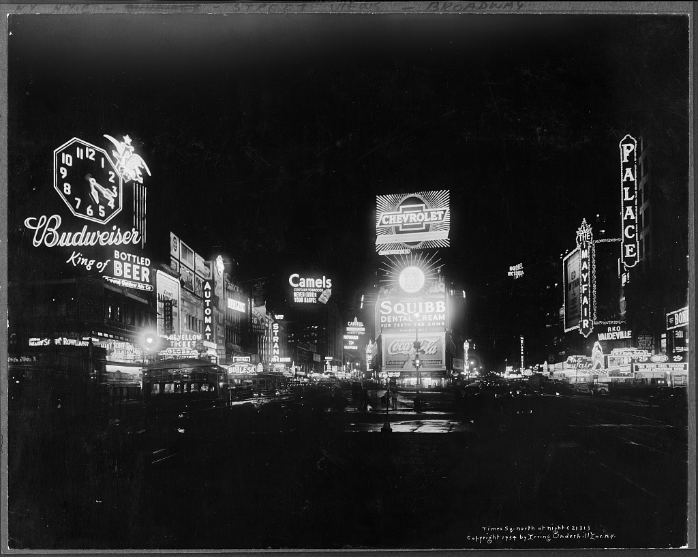
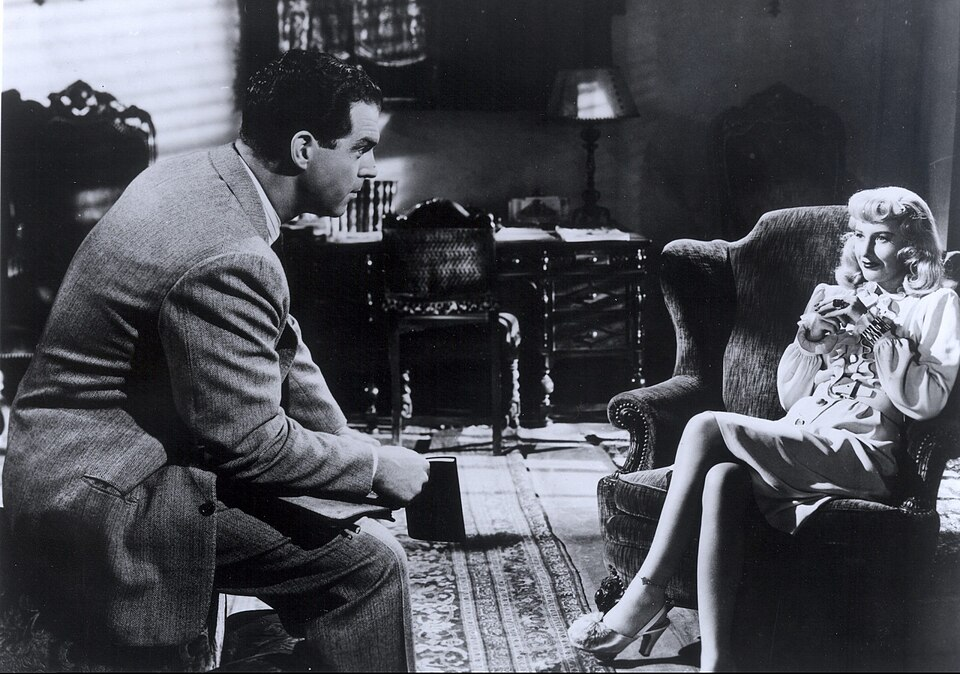

Wednesday · Film
(c. 1940–1958): hard-boiled detectives, femme fatales, and the shadowed American crime film
During World War II and the years after, Hollywood studios shot crime films at night with borrowed from German Expressionist emigres. French critics named the cycle "" in 1946. 's , 's (1941), 's , and 's traced doomed protagonists, insurance fraud, private eyes, and moral ambiguity. The shaped what could be shown; the look was venetian blinds, rain-slicked streets, Dutch angles, , and shadows that cut across faces. By the late 1950s color film, television, and changing censorship rules closed the classic cycle.

is a critics' and historians' label, not a term the filmmakers used. French critic coined "" in August 1946 after watching American crime films that had not been released in France during the war. and 's 1955 book gave the term critical currency. Hollywood studios called these pictures crime films, melodramas, or detective stories. The boundaries are fuzzy: some scholars start with (1941), others with or even earlier. The late edge is usually , though films appear in later decades. Not every 1940s crime film is , and the style overlaps with melodrama, thriller, and women's pictures. Useful core titles: , , , , , , , , , , , , , . Film stills from these titles are often still under copyright or commercially managed; this lesson uses public-domain and clearly licensed images, each captioned as what they show. No AI people.
Select any words, or tap a dotted term.
- Before 1940 German emigres, hard-boiled fiction, Pre-Code crime In the 1930s German filmmakers fled the Nazis and arrived in Hollywood: , , , , . They brought Expressionist lighting and shadow techniques. In literature, emerged: 's (1930), 's (1934) and (1936), 's (1939). These novels featured cynical detectives, femme fatales, and moral ambiguity. Pre-Code Hollywood (before 1934) allowed frank sexuality and violence; after the was enforced, crime had to be punished and vice could not be glamorized, shaping how stories would be told.
- 1940–41 Early noir: Stranger on the Third Floor, The Maltese Falcon releases , a B-picture with Expressionist shadows and a nightmare sequence; some historians mark this as the first . In 1941 releases 's directorial debut , starring as private detective Sam Spade. The film adapts 's novel with cynical dialogue, a gallery of liars and thieves, and a MacGuffin statuette. 's Spade is hard, unsentimental, and survives by wit. is a commercial and critical success and becomes a template.
- 1944 Double Indemnity: insurance fraud, femme fatale, voice-over releases 's in September 1944. and adapt 's novel. plays Walter Neff, an insurance salesman seduced by 's Phyllis Dietrichson into murdering her husband for the insurance payout. The film uses (Neff confessing into a dictaphone), venetian blind shadows, and a fatalistic structure: the protagonist is doomed from the first scene. 's blonde wig and ankle bracelet become iconography. The required that crime be punished; Neff and Phyllis both die. The film is nominated for seven Academy Awards and establishes the formula.
- 1945–46 Postwar cycle: The Big Sleep, The Killers, Detour World War II ends in 1945; veterans return to a changed America. Studios release a wave of dark crime films. 's stars as 's detective Philip Marlowe opposite ; the plot is famously incomprehensible but the atmosphere and dialogue define style. 's adapts Hemingway and introduces and ; cinematographer uses extreme . 's , shot in six days at studio , follows a hitchhiker into doom; it becomes a cult despite its shoestring budget. In August 1946 French critic publishes 'Un nouveau genre policier: l'aventure criminelle,' naming the cycle 'film .'
- 1947 Out of the Past and the private-eye archetype releases 's , starring as private detective Jeff Bailey, as Kathie Moffat, and as gangster Whit Sterling. The film uses flashback structure, voice-over, location shooting in San Francisco and Mexico, and cinematographer 's shadows. 's weary, fatalistic performance becomes the detective archetype: smart, doomed, unable to escape the past. The film is a commercial disappointment but later recognized as a pinnacle.
- 1950–53 Late classic noir: Sunset Boulevard, The Asphalt Jungle, The Big Heat 's turns inward: a dead screenwriter narrates his affair with a silent-film star. 's shows a heist from the criminals' perspective; and a young Marilyn Monroe appear. 's stars as a cop whose wife is killed by a car bomb; plays a gangster's moll scarred by scalding coffee. The violence pushes boundaries. These films are studio productions with A-list stars, not B-unit cheapies; has moved from marginal crime pictures to prestige crime dramas.
- 1955 Kiss Me Deadly and French critical recognition 's adapts Mickey Spillane's detective Mike Hammer with apocalyptic nuclear paranoia and modernist fragmentation. The film is brutal, strange, and influential. In France, and publish , the first book-length study, codifying the cycle as a genre. French critics at celebrate as auteur cinema; directors like and are treated as artists. This French critical framing will later feed back into American film scholarship and the .
- 1958 Touch of Evil: Welles's baroque finale directs and stars in 's , shot in Venice, California. The film opens with a famous three-minute tracking shot and follows a corrupt border-town cop () and an honest Mexican narcotics agent (Charlton Heston, in brownface makeup that is now widely criticized). 's cinematography uses wide-angle lenses, extreme low angles, and baroque shadows. The studio re-cut 's version; a restored cut appeared in 1998. is often treated as the last , marking the end of the black-and-white crime cycle. After 1958 color film, television, and changing censorship rules shift the terrain; goes underground and resurfaces decades later as .
Before
German shadows, hard-boiled prose, and the Production Code cage
did not begin with a manifesto or a studio decision. It began with migration, censorship, and pulp fiction. In the 1930s, as the Nazis consolidated power in Germany, filmmakers fled to Hollywood: , , , , . They brought 's lighting, distorted angles, and psychological shadows with them. American studios hired these emigres as directors and cinematographers; the Expressionist toolkit — , venetian blind shadows, tilted angles — moved from German crime dramas and horror films into American crime pictures. This was not a conscious aesthetic program. It was survival, work, and the habit of shadow.
At the same time, American crime fiction was getting harder and more cynical. In 1930 published , introducing detective Sam Spade: no gentleman sleuth, but a tough operator in a corrupt city. In 1934 published , a novel of adultery, murder, and insurance fraud told in terse, sweaty prose. In 1936 published , another insurance-murder plot. In 1939 published , introducing detective Philip Marlowe, who walked Los Angeles's mean streets and found no one clean. This featured femmes fatales, doomed protagonists, moral ambiguity, and first-person narration that would become voice-over in films. The novels were cheap, pulpy, and enormously popular. Hollywood bought the rights.
But the , Hollywood's self-censorship system enforced from 1934 onward, created a cage. Crime could not pay; criminals had to be punished; vice could not be glamorized; adultery could not be shown sympathetically. The Code was a response to political and religious pressure, a way to avoid government regulation. For crime films this meant protagonists had to die or be arrested, femmes fatales had to be punished, and moral ambiguity had to be resolved into clear judgment. The Code did not prevent — it shaped it. became the art of suggestion, shadow, and implication. What could not be shown explicitly was shown in lighting, framing, and fatalistic structure. The protagonist's doom was sealed in the first scene; the rest was watching it unfold.
The hinge
1941–1944: The Maltese Falcon's cynicism and Double Indemnity's confessional doom
In 1941 released , 's directorial debut adapting 's novel. played Sam Spade, a San Francisco private detective hired to find a missing woman. The case spirals into a hunt for a jeweled falcon statuette, a MacGuffin everyone wants and no one gets. Spade is surrounded by liars: Joel Cairo (), Kasper Gutman (Sydney Greenstreet), and Brigitte O'Shaughnessy (Mary Astor), the client who killed Spade's partner and expects him to protect her. Spade refuses. He delivers her to the police because, as he says, when your partner is killed you're supposed to do something about it. This is not sentiment; it is professional code in a world without other rules. The film's tone is dry, cynical, and unsentimental. and cinematographer Arthur Edeson use shadowed interiors and night exteriors without Expressionist distortion, but the moral landscape is already : everyone is corrupt, loyalty is transactional, and the treasure is worthless. was a commercial and critical success. It made a star and became a template for the private-detective .
Three years later, in September 1944, released 's . , an Austrian emigre, co-wrote the script with , adapting 's novel. The film opens with insurance salesman Walter Neff () staggering into his office at night with a bullet wound, confessing into a dictaphone addressed to his colleague Barton Keyes (Edward G. Robinson). The rest of the film is flashback and voice-over: Neff meets Phyllis Dietrichson (), a blonde in an ankle bracelet who wants to take out an accident insurance policy on her husband without his knowledge. Neff sees the scheme immediately. He should walk away. He doesn't. They plot to kill the husband and trigger the double-indemnity clause for accidental death on a train. The murder goes almost perfectly. Then suspicion, paranoia, and betrayal eat away at both of them. Phyllis tries to kill Neff; he shoots her. He confesses. The film ends with Neff dying in Keyes's arms, unable to make it to the elevator.
is doom from the first frame. The protagonist narrates his own death. The seduces him into murder, and he goes willingly because he is bored, greedy, and attracted to the danger. The required that both conspirators die, but and made the Code's punishment feel like inevitability, not moralizing. Cinematographer lit the film with venetian blind shadows, hard light sources, and pools of darkness. The insurance office, Phyllis's house, the night streets — everything is divided into light and shadow, no middle gray. 's blonde wig, ankle bracelet, and sunglasses became iconography. The film was nominated for seven Academy Awards and lost all of them, but it defined the formula: , doomed protagonist, insurance fraud, voice-over confession, and lighting. After , studios knew what sold.
The scene
B-units, night shoots, and the look that became a genre
was not one studio or one budget level. It was 's B-units, crime pictures, 's second features, 's prestige melodramas, and 's six-day shoots. What they shared was the night. Studios shot crime films at night because night was cheaper when you had minimal lighting equipment and could use existing streetlights, neon signs, and practical lights. Shooting night-for-night (actually filming at night rather than using day-for-night filters) saved money and created atmosphere. Cinematographers like , , and pioneered : minimal fill light, deep shadows, high contrast. later wrote a book called Painting with Light (1949) explaining the techniques. The look was stark, harsh, and psychologically loaded. Shadows fell across faces; characters were half-lit, morally split.
The city was the stage. Los Angeles, New York, San Francisco — was urban and modern, set in hotels, offices, nightclubs, diners, and rain-slicked streets. The city at night was both real location and studio backlot. Cinematographers shot downtown Los Angeles, Bunker Hill tenements, and Broadway neon, then recreated the look on soundstages with venetian blinds, fog machines, and wet-down pavement. The wet street — a visual cliche — was practical: water reflected light sources and made low-budget sets look richer. Rain also signaled doom, pathetic fallacy turned into genre habit. Dutch angles (tilted camera) appeared in moments of psychological instability or moral chaos, borrowed from 's distorted perspectives.
became a signature. The protagonist narrates the story, often in past tense, often confessing, often dead or dying. 's dictaphone confession, 's flashback to Mexico, 's hospital-bed testimony — voice-over let films adapt 's first-person prose and gave the protagonist a fatalistic, retrospective tone. You already know I'm doomed; let me tell you how it happened. The liked voice-over because it allowed moral commentary and distancing. The audience could enjoy the crime while the narrator condemned it. filmmakers used voice-over for atmosphere, irony, and the pleasure of hearing a doomed man narrate his own fall.
The was central. in , in , in , in and — these women were beautiful, seductive, duplicitous, and dangerous. They lured the protagonist into crime, betrayed him, and often died for it. The was a compromise: you could show a sexually assertive, powerful woman if she was punished by the end. But actresses played these roles with intelligence, wit, and desire that exceeded the moral frame. 's Phyllis Dietrichson is not just evil; she is bored, trapped in a loveless marriage, and hungry for money and freedom. 's Kathie Moffat in is a liar and a killer, but 's Jeff Bailey cannot stop wanting her. The was the film's moral problem and its erotic center.
The field
Huston, Wilder, Lang — and a wider web of emigres, writers, and faces in the shadows
Deepen the directors first. made (1941) and , adapting hard-boiled literature with cynical intelligence. , Austrian emigre and former Berlin journalist, co-wrote and directed and , bringing European irony and fatalism to Hollywood. , Weimar auteur of Metropolis and M, emigrated after the Nazis rose and made Hollywood noirs: Scarlet Street (1945), , and others, carrying Expressionist shadows into American crime stories. , German emigre, directed Phantom Lady (1944), , and , working with cinematographer to create extreme . , Austrian emigre, made noirs like in six days with almost no budget, turning scarcity into style.
Other directors shaped the cycle. made , the private-eye that and turned into fatalistic poetry. made and , bringing Citizen Kane's deep focus and baroque shadows to crime stories. made , adapting with fast dialogue and Bogart-Bacall chemistry. made , a psychological about a screenwriter () suspected of murder. made and Angel Face (1953), challenging the with ambiguous morality. made , turning into Cold War apocalyptic paranoia.
Name the writers who supplied the source material and scripts. wrote (1930) and The Thin Man (1934); his cynical detectives and criminal underworlds were templates. wrote (1939), Farewell, My Lovely (1940), and other Philip Marlowe novels, then co-wrote 's screenplay with . wrote (1934) and (1936), providing the femme fatale-insurance fraud formula. Cornell Woolrich (also writing as William Irish) wrote suspense novels adapted into Phantom Lady and other noirs. These writers came from pulp magazines; their prose was terse, violent, and atmospheric. films absorbed their voice-over cadences and moral ambiguity.
Name the cinematographers who created the look. shot , , and others, pioneering extreme and writing Painting with Light (1949) to explain his techniques. shot and other noirs with deep shadows and pools of light. shot and with venetian blind shadows and hard contrasts. shot with wide-angle lenses and baroque shadows for . shot and Phantom Lady (1944) for with extreme . These cinematographers turned German Expressionist techniques into Hollywood genre style.
Name the actors who became icons. defined the hard-bitten detective in , , and : tough, smart, unsentimental, and ultimately alone. in played the weary, fatalistic detective who knows he is doomed and walks into it anyway. in was the blonde in an ankle bracelet, seductive and deadly. in was the brunette , beautiful and duplicitous. , cast against his nice-guy type, played the doomed insurance salesman in . debuted in as a doomed boxer. in was the who sings in a nightclub. in performed the "Put the Blame on Mame" glove striptease and became a sex symbol. in had scalding coffee thrown in her face, the film's shocking violence. These actors inhabited moral ambiguity and psychological damage; was not hero stories, it was studies of failure and entrapment.
Elsewhere
Same years on other screens: Italian neorealism, British spiv films, Japanese postwar crime, Mexican noir
Look sideways at the 1940s and early 1950s without forcing a global formula. In Italy, as World War II ended, Roberto Rossellini shot Rome Open City (1945) on the streets with non-professional actors and available light — the founding text of , a related capsule on this site. and were contemporaneous responses to postwar rupture, but used location realism and social observation while used shadows and fatalism. Vittorio De Sica's Bicycle Thieves (1948) and Umberto D. (1952) are not , but 's crime films — Giuseppe De Santis's Bitter Rice (1949), Pietro Germi's In the Name of the Law (1949) — share 's urban anxiety and moral ambiguity, shot in Sicily and the Po Valley, not Los Angeles.
In Britain, postwar crime films showed spiv culture (black-market hustlers) and urban rot. John Boulting's , adapting Graham Greene's novel, follows a teenage gangster (Richard Attenborough) in a seaside resort town. The film uses shadows and violence but is British working-class Catholic guilt, not American hard-boiled. Carol Reed's , set in postwar Vienna, stars as Harry Lime, a black-market racketeer in the rubble. Anton Karas's zither score, tilted angles, and sewer chases make it noir-adjacent, though the setting is European occupation zones and the tone is Graham Greene cynicism.
In Japan, as cities rebuilt after wartime firebombing, Akira Kurosawa made Drunken Angel (1948) and , postwar crime films set in Tokyo's rubble and black markets. follows a young cop (Toshiro Mifune) hunting his stolen gun through sweltering summer streets, pachinko parlors, and slums. The film uses location realism, not shadows, but the postwar anxiety, urban danger, and moral uncertainty are contemporaneous with Hollywood . Kurosawa studied American films; shares 's detective structure and fatalism but is Japanese postwar reconstruction, not American crime.
In Mexico, Emilio Fernández and cinematographer Gabriel Figueroa made crime melodramas in the 1940s with lighting and fatalistic tone: Victims of Sin (1951), a cabaret , follows a dancer and a pimp in Mexico City's underworld. In Argentina, postwar crime films absorbed Hollywood style and tango-culture fatalism; directors and cinematographers studied American techniques. These were not Hollywood exports or imitations but parallel responses to postwar cities, crime, and moral ambiguity, using 's visual grammar because the grammar was useful. French in the 1930s — Marcel Carné's Port of Shadows (1938), with Jean Gabin and Michèle Morgan in doomed romance and fog — predated Hollywood but shared fatalism and shadows; French critics later saw as an American echo of their own 1930s style.
After
Touch of Evil's finale, color film, television, and neo-noir's long echo
By 1958 the cycle was ending. 's , released that year by , is often marked as the last . The film opens with a famous three-minute tracking shot: a bomb is planted in a car, the car drives through a Mexican border town, the camera follows without cutting, crossing streets and sidewalks, until the car explodes. The rest of the film follows a corrupt American cop, Hank Quinlan (), and an honest Mexican narcotics agent, Mike Vargas (Charlton Heston, in brownface makeup that is now rightly criticized as racist casting). 's cinematography uses wide-angle lenses, extreme low angles, and baroque shadows that push style into Expressionist excess. The studio re-cut 's version; in 1998 editor Walter Murch restored a cut closer to 's 58-page memo. was a commercial failure and 's last Hollywood studio film. It is also taken to ornate, self-conscious extremity, the style aware of itself as style.
Why did the cycle end? Color film became standard; 's black-and-white shadows no longer seemed modern. Television drained audiences from theaters; studios needed spectacle, not shadows. The weakened in the late 1950s and collapsed in the 1960s; filmmakers could now show what had only implied, and explicit violence and sexuality replaced suggestion. The Korean War and Cold War paranoia shifted the cultural mood; the postwar veteran's return was no longer fresh material. Urban renewal cleared the old downtown streets and tenements where had been shot. The private detective and became cliches, parodied and exhausted. By 1960 as a production cycle was over.
But French critics preserved and elevated it. In the 1950s critics at — François Truffaut, Jean-Luc Godard, Éric Rohmer — wrote about Hollywood noirs as auteur cinema. They treated , , and as artists, not just genre hacks. This fed back into American film scholarship in the 1960s; was rediscovered as a genre and an aesthetic. Andrew Sarris's The American Cinema (1968) and later academic writing codified as a critical object. Retrospectives, festivals, and repertory screenings kept the films visible. In the 1970s filmmakers — Robert Altman's The Long Goodbye (1973), Roman Polanski's Chinatown (1974), Martin Scorsese's Taxi Driver (1976) — revived style and themes as , a related capsule on this site. Chinatown is a set in 1930s Los Angeles with Jack Nicholson as a private eye, but made in 1974 with 's moral complexity and freedom from the .
continued: Ridley Scott's Blade Runner (1982), the Coen brothers' Blood Simple (1984) and Miller's Crossing (1990), Curtis Hanson's L.A. Confidential (1997), Christopher Nolan's Memento (2000). These films used 's visual style, moral ambiguity, and fatalistic structure but updated settings, added color, and explored contemporary anxieties. became a toolkit, not a period. Film schools taught and as foundational texts; lighting and voice-over became part of basic visual literacy. The and doomed detective became archetypes studied in gender and film theory. 's cage and emigre shadows were gone, but the mood survived: cynicism, entrapment, beautiful danger, and the city at night.
A question
A question to keep asking
If 's shadows, femme fatales, and doomed protagonists were shaped by the 's requirement that crime be punished and vice not glamorized, what happens to the genre when censorship disappears and filmmakers can show everything explicitly? Does 's power come from what it could not show directly, or from the fatalism and moral ambiguity underneath the shadows?
Fun fact
Noir cinematographers shot night-for-night on tiny budgets

{kind=link}
's signature look — rain-slicked streets, neon reflections, pools of shadow — was partly born from B-unit economics. Studios like , , and outfits shot crime films at night with small crews and tight schedules. Shooting night-for-night (actually filming at night rather than using day-for-night filters) was cheaper when you had minimal lighting equipment and could use existing streetlights and neon signs. Cinematographer , who shot and , pioneered techniques that required fewer lights and created deeper shadows. 's was shot in six days; its harsh shadows and minimal sets were necessity, not luxury. The aesthetic became inseparable from the economy: looked dark because it was cheap to shoot dark, and the shadows carried psychological weight that turned budget into style. A-list noirs like used the same techniques but with bigger budgets and stars.